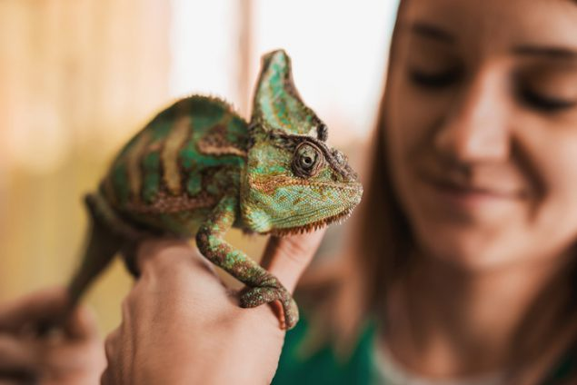

PETS

Pets are very important and Before adopting a new pet, make sure that it is the right one for you and your family. Do some research beforehand about the specific needs of the animal. Ask yourself these questions before getting a pet:
Keep Your Pet Healthy
Whether you have a dog, cat, horse, parakeet, gerbil, bearded dragon, or other fun pet, providing regular, life-long veterinary care is important for keeping your pet and family healthy. Regular veterinary visits are essential to good pet health. Talk to your pet’s veterinarian about how to keep your pet healthy. Provide your pet with a good diet, fresh water, clean bedding, and plenty of exercise. Keep up with your pet’s vaccines, deworming, and flea and tick control.